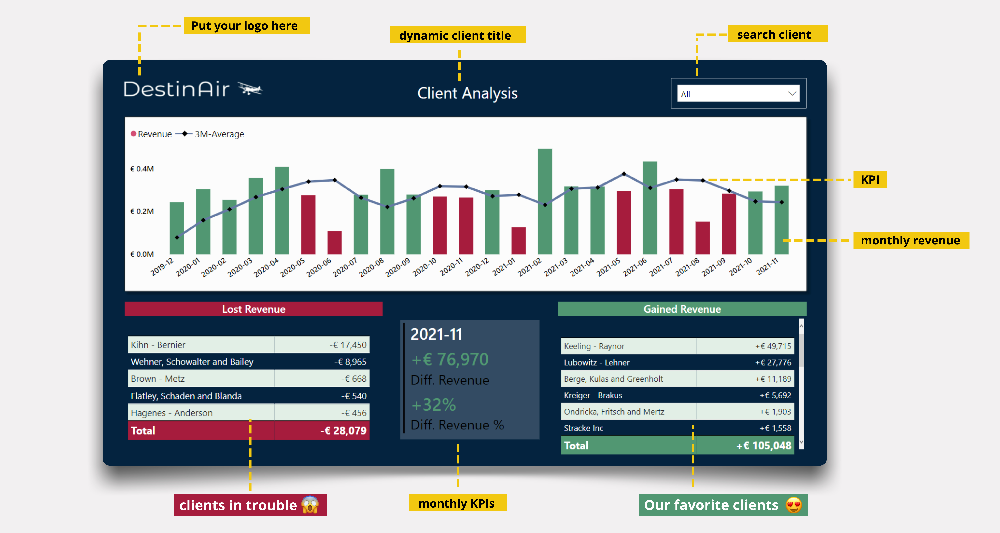
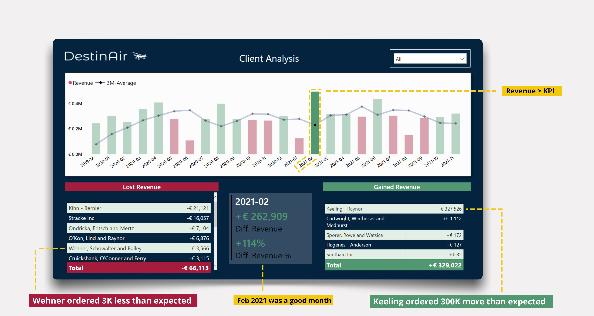
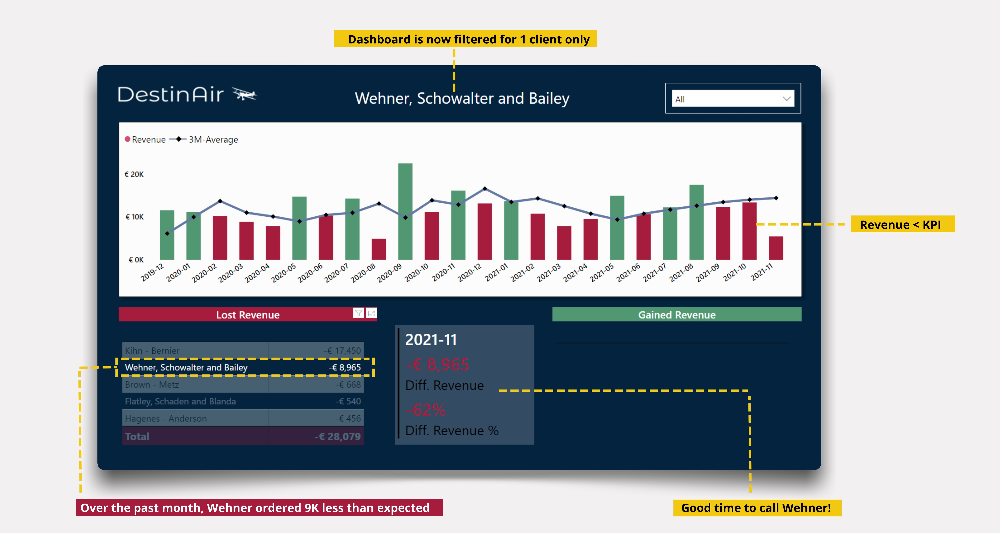

How to use the Dashboard
1. Open the dashboard once a month
You will want to see green bars on top. This means you sold more (€) than you projected for that month (KPI). The projected sales is calculated as a 3-month moving average. Green bar means sales > KPI, red bar means sales < KPI.
The lower section of the dashboard shows you the clients that caused the largest decrease (red table) or increase (green table) in revenue. In the middle you see the exact results (€
/ %) of how your company performed last month. In this case our revenue for 2021-11 was €76,970 higher than expected.

2. Select one month to filter the dashboard
Now, lets say that you would like to analyse one month in detail.
Take February 2021, since your revenues have been particularly good that month. Just click on the (green) bar of that month to filter the entire dashboard.
You can directly see that this rise is solely due to Keeling-Raynor who have been ordering a surplus of €
300K.

3. Select one client to filter the dashboard
Next, you will want to analyse how the sales of a specific client evolved over time.
Easy! Click on the name of the client or type in the name in the filter top right. All visuals will filter again and you can now clearly see that Wehner has been ordering less than expected for 3 consecutive months.
This month alone he ordered € 9K less?! Good time to call him.
